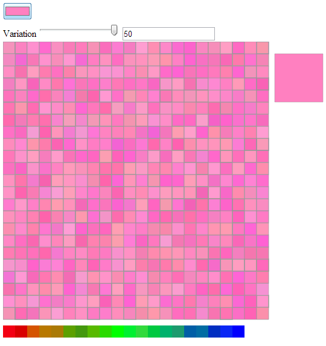
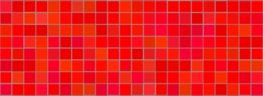
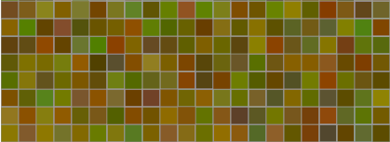
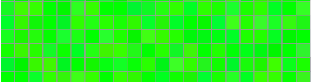
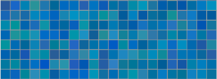
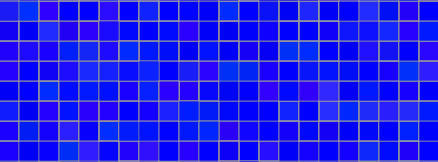
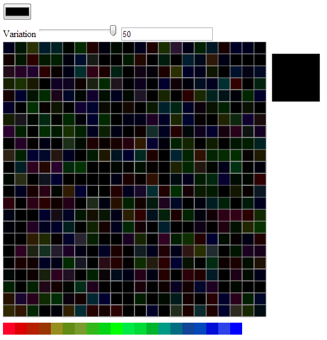

Color has been bothering me lately. To get to color, though, we have to take a short digression into space. You see, a lesson you learn early on in spatial analysis is that just because your GIS package gives you 12 points of decimal precision when you add a point, that doesn’t mean you should use it. False precision in the case of coordinates is well understood, but I wonder why there is no analog in color. As data visualization grows more prominent, color theory becomes a practical consideration of modern scholarship–just as geometry, ontology, formal logic, and countless other seemingly unrelated fields have begun to intrude upon literature and history. And while work has been done by folks like Cynthia Brewer and the team at Tableau to solve practical issues of palette and readability, I’m more interested in the issue of false precision in color representation and the use of functions to determine visual attributes rather than fixed values.
To better understand what random perturbation of color and visual elements would produce, I wrote a little color perturbation toy in D3 that takes advantage of the range slider and color picker HTML elements (these only work in Chrome) and wrote a quick function to randomize the color displayed in 506 squares, while displaying a single, large square with the original color selected.

function slightlyRandomColor(r,g,b,range) {
r = r + (Math.floor(Math.random() * range) - Math.floor(range / 2));
g = g + (Math.floor(Math.random() * range) - Math.floor(range / 2));
b = b + (Math.floor(Math.random() * range) - Math.floor(range / 2));
return "rgb("+r+","+g+","+b+")"
}I updated this in the slightlyLessRandomColor function to take into account the “distance” from maximum value of that primary color. Naturally, there’s some disagreement as to what a primary color is, and a CMYK scale would treat this differently, but this is just an initial foray. In a finished version, I’d prefer this to be based on pure hues, so that variation increases in the muddy regions. The code is pretty simple:
function lessSlightlyRandomColor(r,g,b,range) {
var scaleRamp = d3.scale.linear().domain([256,0]).range([.5,2]).clamp(true);
var rRange = (range * scaleRamp(r));
var gRange = (range * scaleRamp(g));
var bRange = (range * scaleRamp(b));
r = r + (Math.floor(Math.random() * rRange) - Math.floor(rRange / 2));
g = g + (Math.floor(Math.random() * gRange) - Math.floor(gRange / 2));
b = b + (Math.floor(Math.random() * bRange) - Math.floor(bRange / 2));
return "rgb("+r+","+g+","+b+")"
}
The effects are rather striking. The idea is that rather than picking a single color out of the 256x256x256 (or 16.78 million) available colors, you designate a small or large color region. In a sense, this is an imprecise color suitable for less precise data. Now, perhaps you’re working with data where you can claim 1 in 16.78 million precision. I don’t typically have that at my disposal, and that’s one of the reasons I wanted to explore this. The primary motivation is still aesthetic, of course, and I think that this minor perturbation will be more appealing and attractive to readers.
This can be taken beyond color elements and applied to line thickness (as I’ve done in the demo) and curving on paths, opacity, et cetera. These channels, in the parlance of information visualization, are all amenable to functional values that can be jostled based on known inaccuracies in individual data points or generally understood issues of uncertainty, precision, and accuracy of the project as a whole. Again, the curves end up looking like they’ve been drawn (though with only minor perturbation, by someone with a steady hand) and so the aesthetic motivation is there, but the aesthetic enshrines a fact of data visualization used in representing the kinds of phenomena I’m called on the represent.
The results give a different understanding of what it means to have the “same level of variation” when that variation is not just a simple value but a function based on the value of the color being affected. Turning the variation up to a maximum of 50 (which means +-25 from the R,G, and B positions on the color) already implies less variation for values at the top or bottom of the scale (near 0 or 255, in other words) and since the function further scales this variation so that it is more at 0 and less at 255, the result is that “high variation” has quite different visual results:





There are, at least, three issues at play here. One is the capacity to optically distinguish between different parts of visual light spectrum, which could itself be accounted for in the development of functional colors. The second is the use of functions to perturb visual elements for aesthetic purposes as well as to address issues of visual representation of complexity and uncertainty. The final is the idea of regions, be they color regions or angle regions or line thickness regions, to fight against false precision. Naturally, with high enough variation, you can end up damaging the ability for a reader to distinguish between categories of elements, as seen in the changing color ramp on the bottom of the demo:

The variability in the blue (in this particular case, and each time it will be different) makes it impossible to distinguish between category 20 and category 18 and just as difficult to distinguish between category 17 and category 19, or if this is a continuous ramp, to distinguish that entire region. But it may be that this is imprecision is a more accurate representation of some very imprecise dataset. You may therefore be able to use functional colors and imprecise colors to provide higher accuracy with lower precision. Obviously, this begs for a robust implementation, which I hope to provide some time down the road.